之前发Claude Code、Harness Engineering、OpenClaw这些橙皮书的时候，总有粉丝站出来表示，比起书本身，更希望我分享做橙皮书的那个skill。
哈哈哈，我懂。
不过橙皮书对我来说也不过是阶段性的试验产物，现在已经算是过去式了。
很多人问过我橙皮书到底赚不赚钱，我干脆把四期结算单摊开给你看：
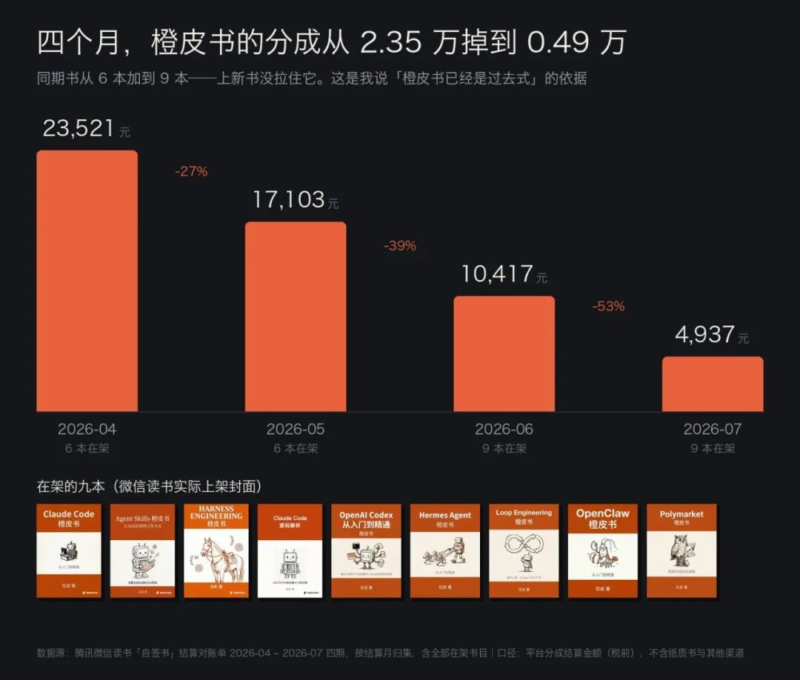
四个月，从2.35万掉到0.49万，跌了79%。这中间我还上架了三本新书，从6本变成9本，一点没拉住。
所以我说它是过去式。
那接下来做什么呢？这次我做的这个东西叫huashu-report，比橙皮书那套进阶得多，能干的活也广得多。
广到什么程度呢？我之前为了辅助自己理解从几十亿年的生命诞生，一直到最近的AI，我特意让这个skill写了本370页的《智能简史》——橙皮书只是它能做的六种东西里的一种。
八份产出摆在一起是这样：
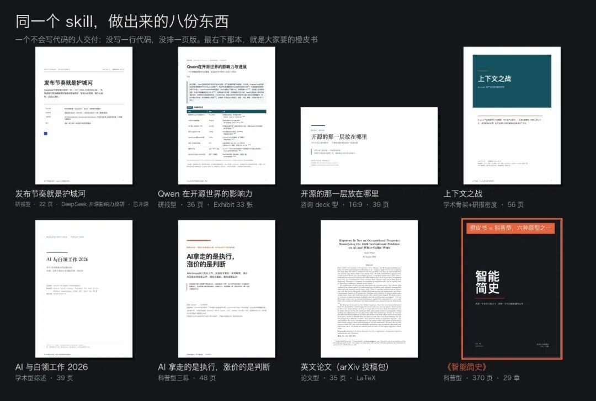
22页的DeepSeek投研、36页的Qwen研报、39页的16:9咨询deck、56页的产品竞争格局研究、两份学术型综述、一篇35页的英文论文投稿包，还有那本370页29章的书。
翻起来大概是这个样子。先看那份16:9的deck，一页一个结论，就是你在麦肯锡BCG提案里看到的那种：
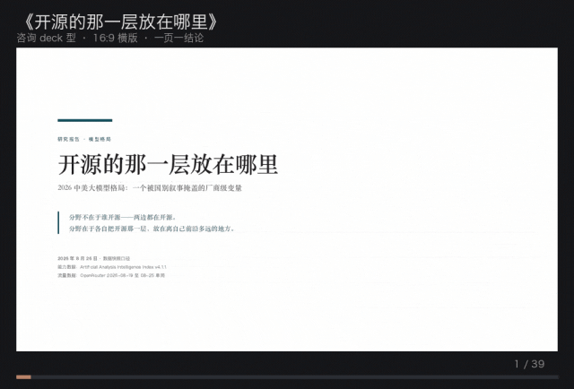
这是已经开源的那份研报，22页，Exhibit连着编号：
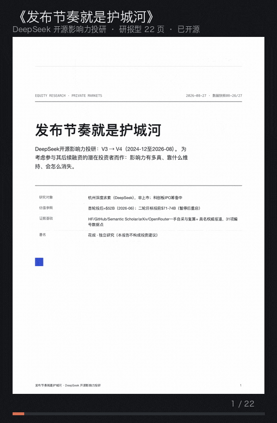
我想聊的不是「AI能写报告」，这个大家都知道了。我之所以做这个skill，是想解决一些更具体的问题：AI写不好报告，瓶颈从来不在文笔，在于它不知道什么叫好，也常常不知道什么是真的，幻觉严重。
让Agent写报告的几个难点
你让模型写一份五十页的东西，它一定给得出来。真正会翻车的是另外三件事：编数字、同一件事翻来覆去说三遍、前后口径打架。
这个skill里最承重的部分，就是对付这三件事的。我分三层说。
第一层：数字不许从正文里长出来
开工的第二步——注意是在动笔写正文之前——先建一个 数据表.json。每个要进正文的数字都是里面的一条记录，带着数值、口径、样本量、出处，还有一个verified位。正文里引用它靠一个函数，渲染的时候变成上标编号，点回数据表那条。
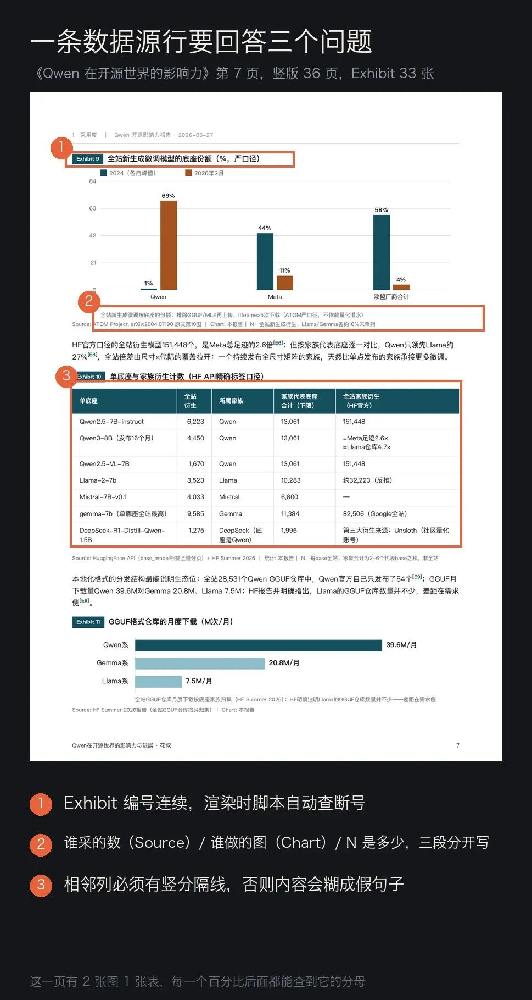
真正管用的是反过来那条：编译器会检查「正文引了数据表里没有的条目」。
什么意思呢？模型想在正文里现编一个数字，它当然编得出来，但它过不了这道编译——因为那个编号在数据表里根本不存在。数字的唯一来源被锁死在一个文件里，改正文不能动它，要动它就得回一手来源核一遍。
配套还有条硬规矩：口径写不出一句完整的话，这个数字就不能用。
这条挡掉的东西比我想的多。做Qwen那份报告的时候，累计下载量我手上有四个数在流传，325.4M、10亿、20.45亿、30亿，差着一个数量级。逼着自己把每个数的口径写成一句完整的话之后才发现，它们是四种互不兼容的算法，量的压根是四个不同的东西。
第二层：能写成函数的规则，一律不许留在手册里
这条是那本370页的书教我的，我当时挺意外的。
同一本书、同一份写作手册，手册里白纸黑字写着「加粗一章不超过三四处」。早期那批12章确实老老实实3到4处，后来补的17章全线超标，最多的一章我数出来36处。
每个agent都读了手册。但手册不是强制力。
所以后来规则按「机器能不能判」重新分了三层。
中英文之间不加空格，引用标记转上标并进附录，首字下沉能不能用在这个字上（「一」「十」这种笔画极简的字放大三倍，读者看到的是一根横杠不是一个字）——这些判据都能写成一行代码，那就全挪进编译器，写作端根本不需要记。
加粗一章几处、各章篇幅差多少，机器判不了该加在哪一句上，但超没超它数得出来，那就做成自检报数。
只有「章首要写一个具体的人和一个具体时刻」这种，机器判不了什么叫具体，才留在手册里。
一条判据：如果一条规则可以写成一个函数或者一个计数，就不要把它留在手册里。 留在手册里的每一条，都是在赌每个写作者都记得住，而写的人越多、文档越长，这个赌注的赔率越差。
第三层：机器查完，还得用眼睛逐页看
渲染脚本每次都会自动查这些：图表编号有没有断号或者重复、目录页码跟实际页对不对得上（页码不许手写，渲两遍回填，最多4轮收敛）、有没有占位符残留，还有每页四边留白的实测毫米数——它把每一页渲成灰度图去量，内容顶格了或者边距被挤掉了，直接报页码给你。
但真正会毁掉一份报告的那些缺陷，脚本一个都查不出来。
负值柱被画成零高度，「下降11%」和「没有变化」在图上长得一模一样；标注被版心切掉，而SVG是不报溢出的；标题落在页底、内容翻到下一页，机械自检也查不出来——那页确实有内容，只是只有五个字。
所以最后一道工序是把PDF逐页渲成PNG看。300页当然不可能一页一张地看完，做法是12页拼成一张检查表，30张扫完全书：
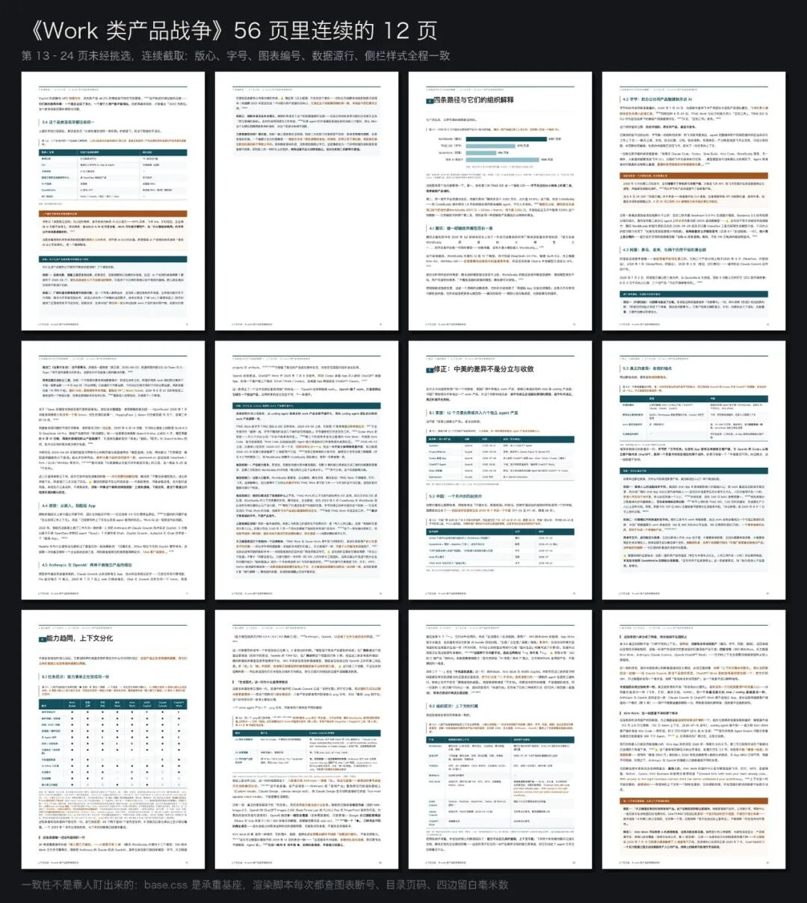
这仍然是逐页，不是抽检，每一页都进过眼睛，只是分辨率分两档，扫到可疑的再单独开全尺寸那一页。排版缺陷从来不是均匀分布的，它就集中在最复杂的那几页：长表、宽图、附录。
还有一条是关于自检本身的：假警报比漏报贵。 早期版本我直接搜「待补」两个字，结果把正文里一句诚实的交代也报成了待补，每次渲染都亮一条假警报，久了就没人看这份自检了。
六种原型，橙皮书是其中一种
这是它比橙皮书skill宽得多的原因：同样是一份东西，读者拿它去干什么，决定了它是完全不同的六种。
要拿去开会说服人的，是16:9横版的咨询deck，一页一个结论，标题本身就是一整句结论句。大家说的「专业级PPT」就是这个：
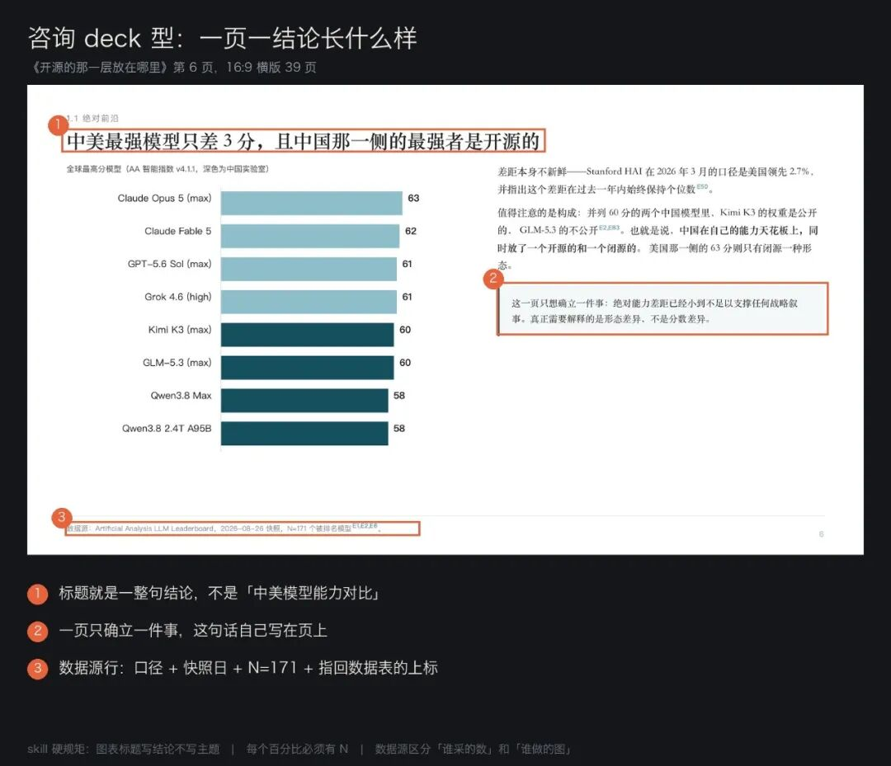
要查具体数据的，是研报型。它是「标题写结论」这条规矩的唯一例外——查数的读者要的是索引，不是被你说服，所以图表标题反而要中性，结论留给小节标题：
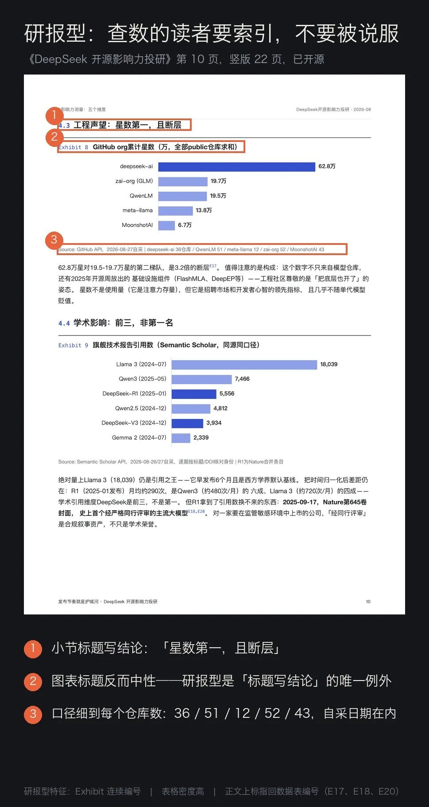
剩下四种：要被人引用的走学术型（方法论透明、预先反驳自己）；要投arXiv的走论文型（英文、LaTeX不是HTML、IMRaD结构）；要让人理解一个群体的走调查型（问卷原题必须随图给）；面向大众、读完还能动手的是科普型，橙皮书走的就是这一条。
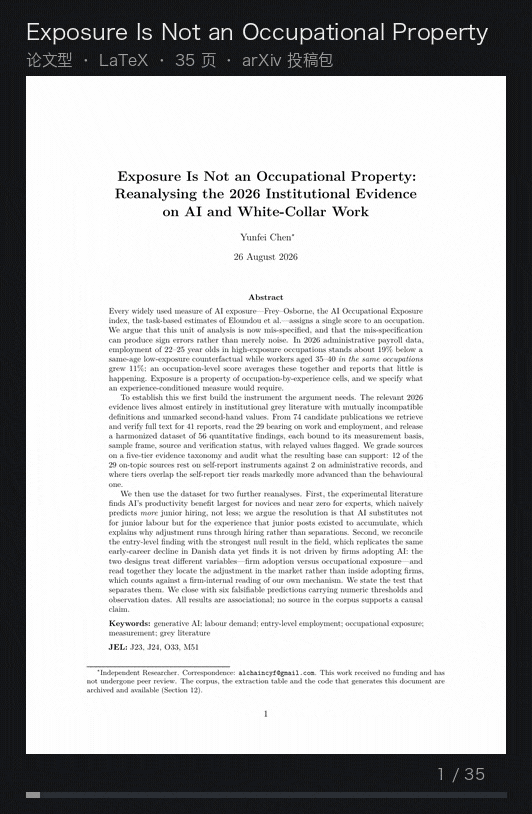
选错原型是最贵的错误。 把一份要被引用的东西做成deck，没人能引；把一份要开会用的做成60页学术报告，没人会读。而AI在没有这个框架的时候，默认交出来的是这六种的平均数，也就是哪一种都不是。
Learn from the best
我觉得skill很有价值的一点是，他可以把没有被AI训练过的藏在人脑中的工作流、品味等知识固定下来；同时，也能通过一些机制去激发你期望agent具备的能力，从最好的范本去学习。
那天我跑了个19个agent的workflow，去扫2026年顶级机构发的AI报告，出了74份的总榜，实测能下到全文的有42份——Stanford、BCG、McKinsey、OpenAI、Reuters、RAND、世界银行都在里面。然后写了个解剖器，把它们拆成可以比较的结构指标。
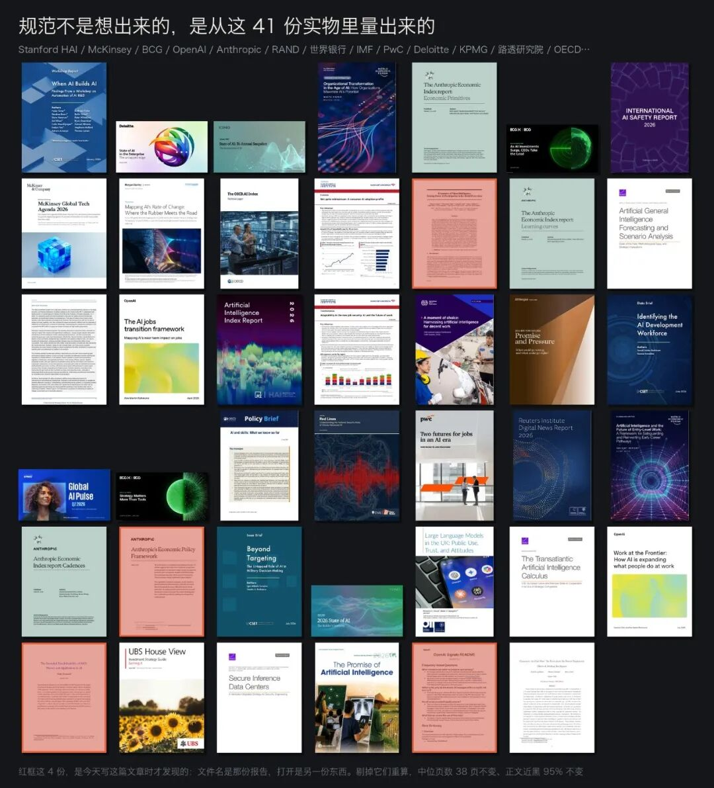
所以现在Huashu-Report所产出报告的设计、结构、用词等品位其实不算是跟着我来的，而是选取了世界上最顶尖公司的选择。
那，怎么能用上呢？
MIT协议，装上就能用：
https://github.com/alchaincyf/huashu-report
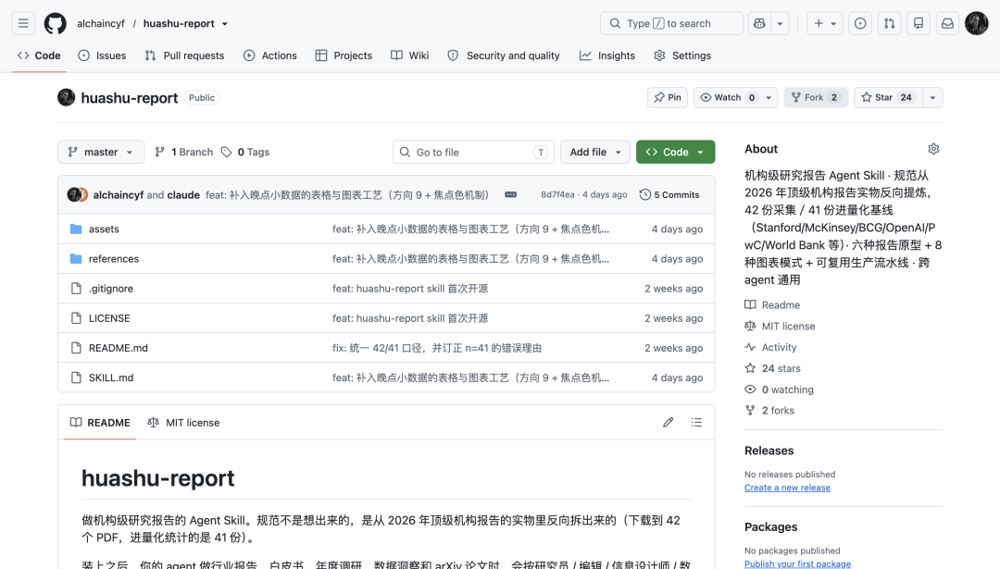
那份DeepSeek研报连数据带脚本也全开源了：
https://github.com/alchaincyf/deepseek-influence-report
不装也行。上面这几条规矩本身就能用，你甚至可以不读完这篇，直接把它们复制给你的Claude Code、Codex、workbuddy、豆包工作、千问工作、Zcode、Kimi Code等等，任何agent都行。下次让它写报告的时候贴进去。